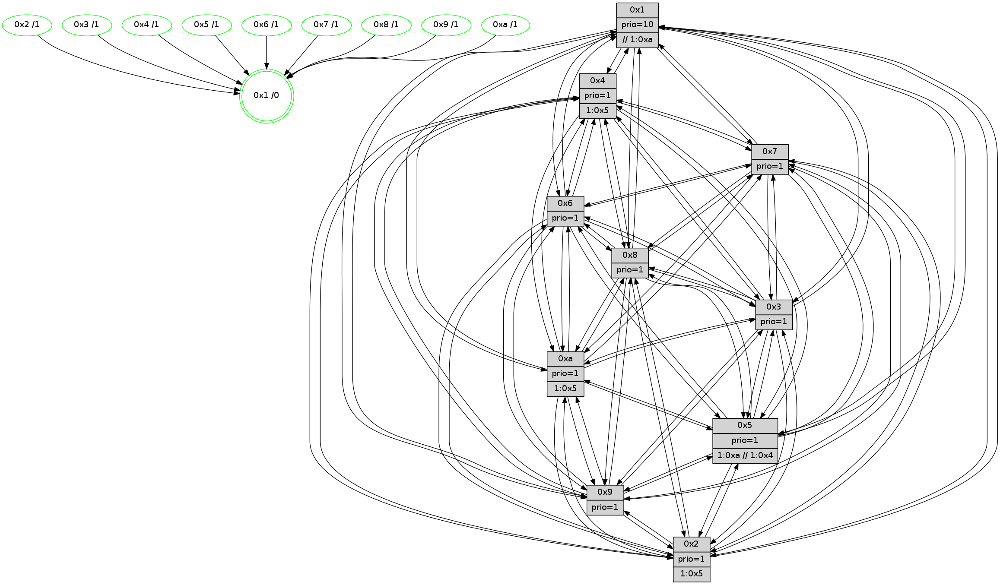

>> << IDX [start] -100 -25 -5 +0 +5 +25 +100 [645.119733095]
 Previous packets
----------------------------------------------------------------------
640.390947 beacon01(faad) #0 coord=01,02,03,04,05,06,07,0a,09,08 cycle=688.0ms assoc
-- color-indic=1 64 11 c8
640.400929 beacon02(faad) #0 coord=01,02,03,04,05,06,07,0a,09,08 cycle=688.0ms assoc 64 82 f9
640.410930 beacon03(faad) #0 coord=01,02,03,04,05,06,07,0a,09,08 cycle=688.0ms assoc 64 f8 b4
640.430929 beacon05(faad) #0 coord=01,02,03,04,05,06,07,0a,09,08 cycle=688.0ms assoc 64 f5 13
640.440931 beacon06(faad) #0 coord=01,02,03,04,05,06,07,0a,09,08 cycle=688.0ms assoc 64 7b c4
640.450930 beacon07(faad) #0 coord=01,02,03,04,05,06,07,0a,09,08 cycle=688.0ms assoc 64 01 89
640.460933 beacon0a(faad) #0 coord=01,02,03,04,05,06,07,0a,09,08 cycle=688.0ms assoc 64 70 82
640.470935 beacon09(faad) #0 coord=01,02,03,04,05,06,07,0a,09,08 cycle=688.0ms assoc 64 fe 55
640.480937 beacon08(faad) #0 coord=01,02,03,04,05,06,07,0a,09,08 cycle=688.0ms assoc 64 84 18
640.492471 [Hello(4): seq=411 sym=5,7,6,2,3,9,8,10,1 sysInfo= stat=5:7,11,14,6/7:5,6,2,2/6:13,13,2,6/2:0,13,12,6/3:9,11,10,4/9:8,1,14,3/8:14,9,0,7/10:10,8,0,6/1:13,12,13,1]
640.495812 [Hello(7): seq=411 sym=2,3,5,6,4,8,9,10,1 sysInfo=hasWarning stat=2:1,2,5,9/3:9,3,3,8/5:3,11,1,9/6:12,9,2,1/4:9,3,3,6/8:10,3,4,4/9:6,2,3,8/10:2,9,3,7/1:4,11,14,1]
640.498532 [STC(8)->1 #0.47 tree-change,inconsistent-stability,stable,to-color d=1]
640.500805 [Color(8) seq=91 @0:0 prio=1]
640.502071 [Hello(1): seq=320 sym=4,2,9,5,10,3,8,6,7 sysInfo=coloring-mode-on,ColoringModeRequestCalled stat=4:2,4,1,0/2:13,0,4,8/9:0,1,0,0/5:9,15,6,8/10:7,2,6,7/3:11,7,12,9/8:0,12,10,6/6:10,1,7,5/7:14,7,11,7]
640.504555 [STC(10)->1 #0.47 tree-change,inconsistent-stability,stable,to-color d=1]
640.505811 [Hello(3): seq=411 sym=1,7,6,2,4,8,9,10,5 sysInfo= stat=1:3,8,0,1/7:12,2,15,3/6:4,7,12,6/2:13,0,13,7/4:1,11,13,4/8:6,1,12,2/9:10,10,2,6/10:11,10,12,5/5:11,3,15,5]
640.508842 [Color(10) seq=69 @0:0 prio=1]
640.510186 [STC(5)->1 #0.47 tree-change,inconsistent-stability,to-color d=1]
640.511642 [STC(2)->1 #0.47 tree-change,inconsistent-stability,stable,to-color d=1]
640.514323 [Hello(6): seq=411 sym=2,3,5,7,9,8,10,1 sysInfo= stat=2:8,8,7,6/3:14,7,2,6/5:5,10,1,7/7:7,3,3,1/9:11,4,2,6/8:0,9,1,5/10:6,10,6,6/1:2,14,11,1]
640.518317 [STC(6)->1 #0.47 tree-change,inconsistent-stability,stable,to-color d=1]
640.523454 [STC(3)->1 #0.47 tree-change,inconsistent-stability,stable,to-color d=1]
----------------------------------------------------------------------
641.179078 beacon01(faad) #0 coord=01,02,03,04,05,06,07,0a,09,08 cycle=688.0ms assoc
-- color-indic=1 64 ad cd
641.189061 beacon02(faad) #0 coord=01,02,03,04,05,06,07,0a,09,08 cycle=688.0ms assoc 64 3e fc
641.199061 beacon03(faad) #0 coord=01,02,03,04,05,06,07,0a,09,08 cycle=688.0ms assoc 64 44 b1
641.209062 beacon04(faad) #0 coord=01,02,03,04,05,06,07,0a,09,08 cycle=688.0ms assoc 64 33 5b
641.219061 beacon05(faad) #0 coord=01,02,03,04,05,06,07,0a,09,08 cycle=688.0ms assoc 64 49 16
641.229060 beacon06(faad) #0 coord=01,02,03,04,05,06,07,0a,09,08 cycle=688.0ms assoc 64 c7 c1
641.239061 beacon07(faad) #0 coord=01,02,03,04,05,06,07,0a,09,08 cycle=688.0ms assoc 64 bd 8c
641.249065 beacon0a(faad) #0 coord=01,02,03,04,05,06,07,0a,09,08 cycle=688.0ms assoc 64 cc 87
641.259067 beacon09(faad) #0 coord=01,02,03,04,05,06,07,0a,09,08 cycle=688.0ms assoc 64 42 50
641.269069 beacon08(faad) #0 coord=01,02,03,04,05,06,07,0a,09,08 cycle=688.0ms assoc 64 38 1d
641.280226 [Hello(5): seq=412 sym=7,6,4,3,1,9,8,10,2 sysInfo= stat=7:11,10,2,3/6:14,9,2,5/4:6,15,12,5/3:1,15,11,4/1:15,4,12,1/9:0,15,15,3/8:14,5,9,4/10:0,6,0,5/2:14,6,15,4]
641.283312 [Hello(10): seq=344 sym=6,2,3,8,9,5,7,4,1 sysInfo= stat=6:8,13,3,1/2:4,6,7,1/3:14,1,7,3/8:10,1,14,6/9:8,9,11,4/5:12,5,12,6/7:15,13,15,2/4:8,14,10,6/1:2,15,13,1]
641.286324 [Hello(9): seq=355 sym=5,2,3,4,7,6,8,10,1 sysInfo=hasWarning stat=5:5,6,15,7/2:11,14,2,5/3:5,10,12,6/4:9,10,13,5/7:2,14,3,3/6:10,7,0,5/8:11,8,4,2/10:0,3,0,7/1:11,0,15,1]
641.289013 [Color(6) seq=81 @0:0 prio=1]
641.291428 [Hello(8): seq=355 sym=5,2,3,4,7,6,9,10,1 sysInfo=hasWarning,coloring-mode-on,ColoringModeIndicationCalled stat=5:1,3,15,5/2:6,7,6,1/3:10,3,14,8/4:14,14,1,6/7:6,11,2,5/6:2,13,14,6/9:9,8,1,5/10:6,2,14,6/1:6,4,15,0]
641.294300 [Color(4) seq=55 @0:0 prio=1]
641.297184 [Color(1) seq=92 @0:0 prio=10 >>1.@a]
641.299866 [Hello(2): seq=408 sym=4,5,7,6,3,9,8,10,1 sysInfo=hasWarning stat=4:2,2,14,4/5:11,7,11,5/7:2,4,3,3/6:8,13,1,4/3:8,13,12,1/9:0,7,12,1/8:5,14,10,4/10:4,12,12,4/1:14,11,7,1]
641.302712 [Color(2) seq=57 @0:0 prio=1]
641.306955 [Color(9) seq=60 @0:0 prio=1]
641.311094 [Color(7) seq=64 @0:0 prio=1]
----------------------------------------------------------------------
641.967210 beacon01(faad) #0 coord=01,02,03,04,05,06,07,0a,09,08 cycle=688.0ms assoc
-- color-indic=1 64 39 14
641.977191 beacon02(faad) #0 coord=01,02,03,04,05,06,07,0a,09,08 cycle=688.0ms assoc 64 aa 25
641.987192 beacon03(faad) #0 coord=01,02,03,04,05,06,07,0a,09,08 cycle=688.0ms assoc 64 d0 68
641.997193 beacon04(faad) #0 coord=01,02,03,04,05,06,07,0a,09,08 cycle=688.0ms assoc 64 a7 82
642.007194 beacon05(faad) #0 coord=01,02,03,04,05,06,07,0a,09,08 cycle=688.0ms assoc 64 dd cf
642.017194 beacon06(faad) #0 coord=01,02,03,04,05,06,07,0a,09,08 cycle=688.0ms assoc 64 53 18
642.027194 beacon07(faad) #0 coord=01,02,03,04,05,06,07,0a,09,08 cycle=688.0ms assoc 64 29 55
642.037200 beacon0a(faad) #0 coord=01,02,03,04,05,06,07,0a,09,08 cycle=688.0ms assoc 64 58 5e
642.047199 beacon09(faad) #0 coord=01,02,03,04,05,06,07,0a,09,08 cycle=688.0ms assoc 64 d6 89
642.057200 beacon08(faad) #0 coord=01,02,03,04,05,06,07,0a,09,08 cycle=688.0ms assoc 64 ac c4
642.068412 [Hello(7): seq=412 sym=2,3,5,6,4,8,9,10,1 sysInfo=hasWarning stat=2:1,2,6,9/3:10,3,4,8/5:4,11,2,9/6:13,9,3,1/4:9,3,3,6/8:10,4,5,4/9:6,2,3,8/10:2,10,4,7/1:5,11,14,1]
642.073030 [Hello(3): seq=412 sym=1,7,6,2,4,8,9,10,5 sysInfo= stat=1:3,9,0,1/7:12,3,15,3/6:4,8,12,6/2:14,1,13,7/4:1,12,13,4/8:7,1,12,2/9:11,11,2,6/10:11,10,12,5/5:12,3,15,5]
642.077352 [Hello(1): seq=321 sym=4,2,9,5,10,3,8,6,7 sysInfo=coloring-mode-on,ColoringModeRequestCalled stat=4:2,4,1,0/2:14,1,5,8/9:0,2,0,0/5:10,15,7,8/10:8,3,7,7/3:12,7,13,9/8:0,12,10,6/6:11,1,8,5/7:14,8,11,7]
642.081508 [Hello(6): seq=412 sym=2,3,5,7,9,8,10,1 sysInfo= stat=2:9,9,7,6/3:14,7,3,6/5:6,10,1,7/7:7,4,3,1/9:11,5,2,6/8:1,9,1,5/10:6,10,6,6/1:2,15,11,1]
642.085589 [Color(8) seq=92 @0:0 prio=1]
642.088232 [Color(10) seq=70 @0:0 prio=1]
642.092621 [Hello(4): seq=412 sym=5,7,6,2,3,9,8,10,1 sysInfo= stat=5:8,11,15,6/7:6,7,2,2/6:14,13,3,6/2:1,14,13,6/3:10,11,11,4/9:8,2,14,3/8:14,10,1,7/10:11,9,1,6/1:14,13,13,1]
----------------------------------------------------------------------
642.755340 beacon01(faad) #0 coord=01,02,03,04,05,06,07,0a,09,08 cycle=688.0ms assoc
-- color-indic=1 64 85 11
642.765323 beacon02(faad) #0 coord=01,02,03,04,05,06,07,0a,09,08 cycle=688.0ms assoc 64 16 20
642.775323 beacon03(faad) #0 coord=01,02,03,04,05,06,07,0a,09,08 cycle=688.0ms assoc 64 6c 6d
642.785323 beacon04(faad) #0 coord=01,02,03,04,05,06,07,0a,09,08 cycle=688.0ms assoc 64 1b 87
642.795322 beacon05(faad) #0 coord=01,02,03,04,05,06,07,0a,09,08 cycle=688.0ms assoc 64 61 ca
642.805325 beacon06(faad) #0 coord=01,02,03,04,05,06,07,0a,09,08 cycle=688.0ms assoc 64 ef 1d
642.815323 beacon07(faad) #0 coord=01,02,03,04,05,06,07,0a,09,08 cycle=688.0ms assoc 64 95 50
642.825328 beacon0a(faad) #0 coord=01,02,03,04,05,06,07,0a,09,08 cycle=688.0ms assoc 64 e4 5b
642.835327 beacon09(faad) #0 coord=01,02,03,04,05,06,07,0a,09,08 cycle=688.0ms assoc 64 6a 8c
642.845328 beacon08(faad) #0 coord=01,02,03,04,05,06,07,0a,09,08 cycle=688.0ms assoc 64 10 c1
642.856545 [Hello(10): seq=345 sym=6,2,3,8,9,5,7,4,1 sysInfo= stat=6:8,14,3,1/2:5,7,7,1/3:14,1,7,3/8:11,1,14,6/9:9,10,11,4/5:12,5,12,6/7:0,14,15,2/4:9,15,10,6/1:2,0,13,1]
642.859626 [Color(3) seq=77 @0:0 prio=1]
642.864734 [Hello(2): seq=409 sym=4,5,7,6,3,9,8,10,1 sysInfo=hasWarning stat=4:3,2,14,4/5:12,7,11,5/7:3,5,3,3/6:9,13,1,4/3:9,13,12,1/9:0,8,12,1/8:5,15,10,4/10:5,13,12,4/1:15,11,7,1]
642.867227 [Color(6) seq=82 @0:0 prio=1]
642.869154 [Color(2) seq=58 @0:0 prio=1]
642.870451 [Color(9) seq=61 @0:0 prio=1]
642.871899 [Color(4) seq=56 @0:0 prio=1]
642.875418 [Color(1) seq=93 @0:0 prio=10 >>1.@a]
642.880765 [Hello(8): seq=356 sym=5,2,3,4,7,6,9,10,1 sysInfo=hasWarning,coloring-mode-on,ColoringModeIndicationCalled stat=5:1,3,15,5/2:7,8,6,1/3:10,3,14,8/4:15,15,1,6/7:7,12,2,5/6:2,13,14,6/9:9,9,1,5/10:6,3,14,6/1:6,5,15,0]
----------------------------------------------------------------------
643.543473 beacon01(faad) #0 coord=01,02,03,04,05,06,07,0a,09,08 cycle=688.0ms assoc
-- color-indic=1 64 41 1f
643.553455 beacon02(faad) #0 coord=01,02,03,04,05,06,07,0a,09,08 cycle=688.0ms assoc 64 d2 2e
643.563455 beacon03(faad) #0 coord=01,02,03,04,05,06,07,0a,09,08 cycle=688.0ms assoc 64 a8 63
643.573455 beacon04(faad) #0 coord=01,02,03,04,05,06,07,0a,09,08 cycle=688.0ms assoc 64 df 89
643.583457 beacon05(faad) #0 coord=01,02,03,04,05,06,07,0a,09,08 cycle=688.0ms assoc 64 a5 c4
643.593456 beacon06(faad) #0 coord=01,02,03,04,05,06,07,0a,09,08 cycle=688.0ms assoc 64 2b 13
643.603455 beacon07(faad) #0 coord=01,02,03,04,05,06,07,0a,09,08 cycle=688.0ms assoc 64 51 5e
643.613460 beacon0a(faad) #0 coord=01,02,03,04,05,06,07,0a,09,08 cycle=688.0ms assoc 64 20 55
643.623460 beacon09(faad) #0 coord=01,02,03,04,05,06,07,0a,09,08 cycle=688.0ms assoc 64 ae 82
643.633461 beacon08(faad) #0 coord=01,02,03,04,05,06,07,0a,09,08 cycle=688.0ms assoc 64 d4 cf
643.645009 [Hello(1): seq=322 sym=4,2,9,5,10,3,8,6,7 sysInfo=coloring-mode-on,ColoringModeRequestCalled stat=4:3,4,1,0/2:14,1,5,8/9:0,2,0,0/5:10,15,7,8/10:9,4,7,7/3:12,8,13,9/8:1,13,10,6/6:12,1,8,5/7:14,8,11,7]
643.647383 [Hello(4): seq=413 sym=5,7,6,2,3,9,8,10,1 sysInfo= stat=5:8,11,15,6/7:6,7,2,2/6:14,13,3,6/2:1,14,13,6/3:10,12,11,4/9:8,2,14,3/8:15,10,1,7/10:12,9,1,6/1:14,14,13,1]
643.650604 [Color(10) seq=71 @0:0 prio=1 >1.@5]
643.652787 [STC(1) #0.48 tree-change,inconsistent-stability,stable,to-color d=0]
643.657699 [Hello(6): seq=413 sym=2,3,5,4,7,9,8,10,1 sysInfo= stat=2:9,10,7,6/3:14,7,3,6/5:6,10,1,7/4:0,1,0,0/7:7,4,3,1/9:11,6,2,6/8:2,10,1,5/10:7,11,6,6/1:2,0,11,1]
643.661225 [Hello(3): seq=413 sym=1,7,6,2,4,8,9,10,5 sysInfo= stat=1:4,10,0,1/7:12,4,15,3/6:5,9,12,6/2:15,2,13,7/4:2,13,13,4/8:8,2,12,2/9:11,12,2,6/10:12,11,12,5/5:12,3,15,5]
643.666667 [Hello(7): seq=413 sym=2,3,5,6,4,8,9,10,1 sysInfo=hasWarning stat=2:2,3,6,9/3:11,3,4,8/5:4,11,2,9/6:14,10,3,1/4:10,4,3,6/8:11,5,5,4/9:6,3,3,8/10:3,11,4,7/1:6,12,14,1]
643.673200 [Color(8) seq=93 @0:0 prio=1]
----------------------------------------------------------------------
644.331602 beacon01(faad) #0 coord=01,02,03,04,05,06,07,0a,09,08 cycle=688.0ms assoc
-- color-indic=1 64 fd 1a
644.341586 beacon02(faad) #0 coord=01,02,03,04,05,06,07,0a,09,08 cycle=688.0ms assoc 64 6e 2b
644.351585 beacon03(faad) #0 coord=01,02,03,04,05,06,07,0a,09,08 cycle=688.0ms assoc 64 14 66
644.361586 beacon04(faad) #0 coord=01,02,03,04,05,06,07,0a,09,08 cycle=688.0ms assoc 64 63 8c
644.371587 beacon05(faad) #0 coord=01,02,03,04,05,06,07,0a,09,08 cycle=688.0ms assoc 64 19 c1
644.381586 beacon06(faad) #0 coord=01,02,03,04,05,06,07,0a,09,08 cycle=688.0ms assoc 64 97 16
644.391586 beacon07(faad) #0 coord=01,02,03,04,05,06,07,0a,09,08 cycle=688.0ms assoc 64 ed 5b
644.401589 beacon0a(faad) #0 coord=01,02,03,04,05,06,07,0a,09,08 cycle=688.0ms assoc 64 9c 50
644.411590 beacon09(faad) #0 coord=01,02,03,04,05,06,07,0a,09,08 cycle=688.0ms assoc 64 12 87
644.421592 beacon08(faad) #0 coord=01,02,03,04,05,06,07,0a,09,08 cycle=688.0ms assoc 64 68 ca
644.432791 [Hello(8): seq=357 sym=5,2,3,4,7,6,9,10,1 sysInfo=hasWarning,coloring-mode-on,ColoringModeIndicationCalled stat=5:1,3,15,5/2:7,8,6,1/3:10,3,14,8/4:15,15,1,6/7:7,12,2,5/6:2,13,14,6/9:9,9,1,5/10:6,3,14,6/1:7,5,15,0]
644.435514 [Hello(5): seq=414 sym=7,6,4,3,1,9,8,10,2 sysInfo= stat=7:13,11,2,3/6:0,11,2,5/4:7,1,12,5/3:3,0,11,4/1:1,6,13,1/9:2,1,15,3/8:0,7,9,4/10:1,8,0,5/2:0,8,15,4]
644.438545 [Color(7) seq=66 @0:0 prio=1]
644.440153 [Hello(9): seq=357 sym=5,2,3,4,7,6,8,10,1 sysInfo=hasWarning stat=5:7,6,15,7/2:11,14,2,5/3:7,12,12,6/4:10,11,13,5/7:4,15,3,3/6:12,7,0,5/8:12,10,4,2/10:0,5,0,7/1:13,1,0,1]
644.442986 [Color(3) seq=78 @0:0 prio=1]
644.444478 [STC(5)->1 #0.48 tree-change,inconsistent-stability,stable,to-color d=1]
644.446190 [STC(4)->1 #0.48 tree-change,inconsistent-stability,stable,to-color d=1]
644.447861 [Hello(10): seq=346 sym=6,2,3,8,9,5,7,4,1 sysInfo= stat=6:9,15,3,1/2:6,8,7,1/3:15,2,7,3/8:12,2,14,6/9:9,11,11,4/5:12,5,12,6/7:1,15,15,2/4:9,0,10,6/1:3,1,14,1]
644.450800 [Color(1) seq=94 @0:0 prio=10 >>1.@a]
644.453175 [Color(9) seq=62 @0:0 prio=1]
644.457306 [Color(6) seq=83 @0:0 prio=1]
644.458602 [Hello(2): seq=410 sym=4,5,7,6,3,9,8,10,1 sysInfo=hasWarning stat=4:3,3,14,4/5:12,7,11,5/7:4,5,3,3/6:10,13,1,4/3:10,14,12,1/9:0,9,12,1/8:6,0,10,4/10:6,14,12,4/1:0,12,8,1]
644.461217 [STC(10)->1 #0.48 tree-change,inconsistent-stability,stable,to-color d=1]
644.463015 [STC(2)->1 #0.48 tree-change,inconsistent-stability,stable,to-color d=1]
644.466245 [Color(2) seq=59 @0:0 prio=1 >1.@5]
644.467667 [TreeStatus(5)-.->1 #0.48 tree-change,inconsistent-stability,stable child=1]
644.469979 [Color(4) seq=57 @0:0 prio=1 >1.@5]